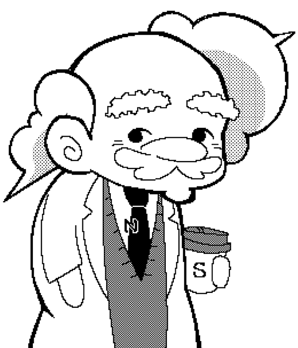

▼

博士
後ほど差し込む画像
元画像は1000×800で用意予定
タップしてすすむ ▼
名前を入力してください
けってい
獲得！
受け取る
0s
--:--
SCORE
0
FAST
SLOW
⚡
ACTIVE UPGRADES
WORLD MAP
つづける
やめる
オプション
OPTION
ドラッグ方向
ABSOLUTE：指の位置→画面中心の方向
RELATIVE：指のスライド方向
ABSOLUTE
RELATIVE
お気に入りスキル
所持しているスキルの中からお気に入りを設定できます。設定したスキルはゲーム開始時の3択に必ず含まれるようになります。
速度バー表示設定
プレイ中に画面右側へ表示する速度バーの表示/非表示を切り替えられます。誤操作が気になる場合は非表示がおすすめです。
非表示
表示
BGM
ON
OFF
効果音
ON
OFF
セーブデータ
セーブデータを初期化
もどる
セーブデータを初期化しますか？
レベル・経験値・コイン・購入状況・称号・図鑑・統計・設定がすべて消去されます。この操作は取り消せません。
キャンセル
初期化する

DENSITY
COLLAPSE
磁力で世界を崩壊させろ
プレイ
LEVEL UP！ Lv.2
+100
FINISH
スコア
NEW!
0
最大連鎖
0
プレイ時間
0:00
取得アイテム
獲得コイン
基本報酬
+20
スコアボーナス
+0
アイテム取得報酬
+0
合計
+20
EXP
↺ リトライ
← もどる
完了
モード選択
クイックプレイ
60秒間で効率よくエネルギーを収集しよう。
エンドレスモード
バッテリーが尽きるまで研究を続け、限界へ挑戦しよう。
ショップで解放
ショップ
プレイを進めると解放
コレクション
レベル20到達で解放
← タイトルにもどる
Lv
1
EXP
レベルアップまで あと
100
0
- 実績ログ -
まだ実績の記録はありません
外部からの支援物資を受け取れるようになったぞ。
準備中
‹
›
EPが足りません
タップして閉じる
タップして閉じる
いいえ
はい
獲得！
タップして閉じる
コレクション
プロフィール
研究員としての経歴とこれまでの成果をまとめています。
チュートリアル
研究の基礎を振り返る場所。迷ったら、まずここへ。
図鑑
これまでの研究で判明した磁晶核の情報を、記録・保管しています。
レベル30到達で解放
実績称号
あなたの研究成果と功績を称え、記録する場所です。
← もどる
- プロフィール -
MSK LAB
研究員証
ショップ実装後に選択可
氏名
称号
調査記録
レベル
Lv 1
クイックモード最高スコア
0
エンドレスモード最高スコア
0
図鑑達成率
0%
実績達成率
0%
総プレイ時間
0時間0分
- チュートリアル -
- 実績称号 -
- 図鑑 -
‹
›
×
×
SELECT SKILL
スキルを1つ選んでゲームを開始
START GAME
飛ばす方向を決めよう
発射！
ギミック作動